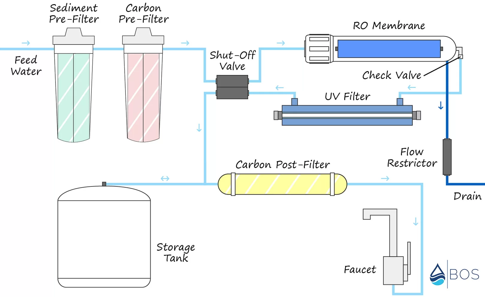

RO + UV systems combine the benefits of Reverse Osmosis filtration and Ultraviolet disinfection to provide superior water quality. Explore the features, process, and applications of this advanced water purification system below.
Overview
The RO + UV system combines Reverse Osmosis (RO) filtration and Ultraviolet (UV) disinfection to produce the highest quality of purified water. RO effectively removes dissolved solids, heavy metals, and impurities, while UV sterilization kills bacteria, viruses, and other microorganisms, ensuring the water is not only clean but also safe for consumption.
Features
- Advanced RO membrane for high TDS removal.
- UV lamp for effective disinfection, eliminating bacteria and viruses.
- Multi-stage filtration: Sediment, Carbon, RO membrane, and UV treatment.
- Compact design, ideal for home and industrial use.
- Low energy consumption, eco-friendly.
- Removes harmful chemicals, heavy metals, and microorganisms.
Process
The RO + UV system process consists of the following stages:
- Pre-Treatment: Sediment and carbon filters remove larger particles and chlorine.
- Reverse Osmosis: Water is forced through a semi-permeable membrane to remove dissolved solids, chemicals, and impurities.
- UV Treatment: Water passes through a UV chamber where ultraviolet rays kill bacteria, viruses, and other harmful microorganisms.
- Post-Treatment: Water is filtered for taste and odor using activated carbon filters.
- Storage: Purified water is stored in a tank, ready for use.

Applications
- Residential: Provides safe drinking water, free from harmful contaminants and microorganisms.
- Commercial: Ideal for offices, schools, restaurants, and hotels.
- Industrial: Used in industries requiring high-purity water, such as pharmaceuticals and food processing.
Water Usage Calculator
Calculate how much water your household or facility uses daily to estimate the necessary capacity of an RO + UV system.